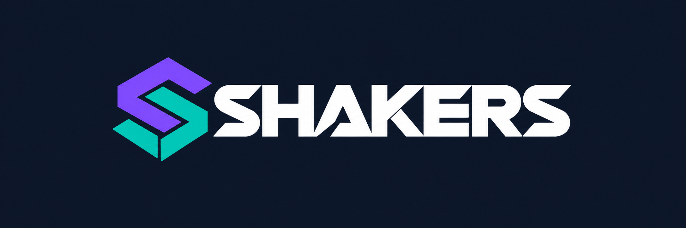
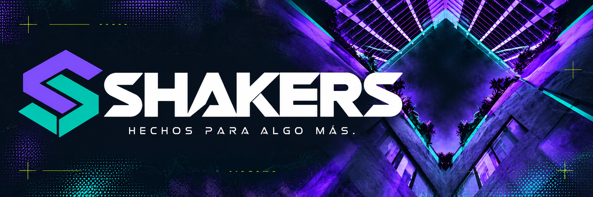
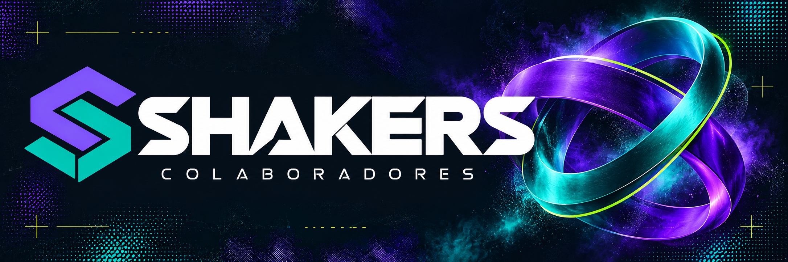

Una identidad que se mueve contigo.
Una S entrelazada, letras más claras y una familia visual en púrpura y turquesa. La arquitectura del grupo y los círculos de colaboradores evolucionan juntos.



Una S entrelazada, letras más claras y una familia visual en púrpura y turquesa. La arquitectura del grupo y los círculos de colaboradores evolucionan juntos.


